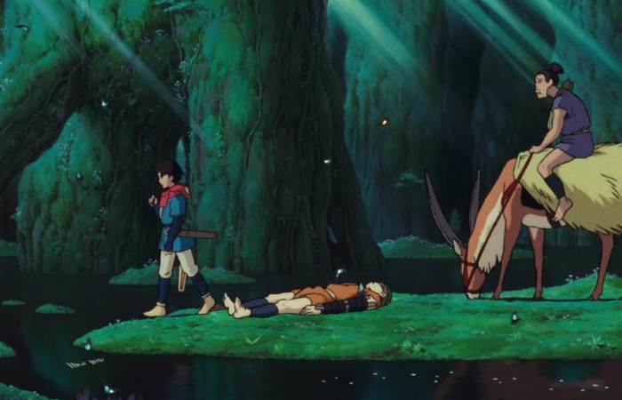
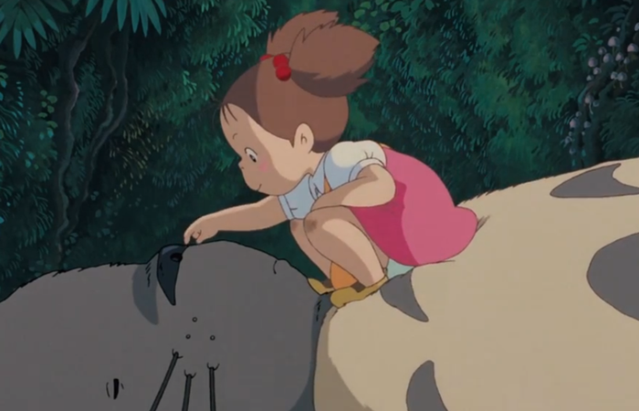
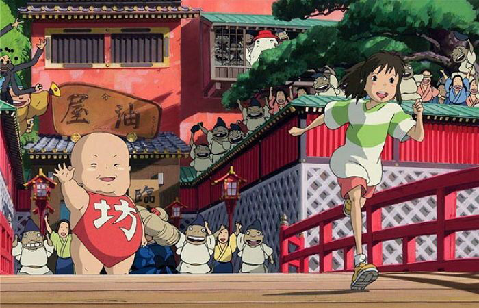

본문콘텐츠영역
On June 15, 1985, 'Top Craft Studio', which was used as a production base for the production of Nausicaa of the Valley of the Valley in the previous year, and the following year, Hayao Miyazaki, Isao Takahata, and Toshio Suzuki In order to produce Laputa, Castle in the Sky, it was acquired with investment from Shoten Tokuma, and the company that was born after changing the company name and reorganizing the organization is now Ghibli. So, Studio Ghibli's first official work is Laputa, Castle in the Sky. It was after Kiki the witch delivery service that the regular employee system was introduced and the salary system became a salary system.
-

Mononoke Hime is an animation produced by Studio Ghibli and directed by Hayao Miyazaki.
Your heart fluttering in the moonlight, the beauty of a sharp sword. Your side face that resembles the tip of that sword. Only the forest spirit Goblin (Mononoke) knows the truth behind the sadness and anger, only Goblin.
-

A 1988 theatrical Japanese animation directed by Hayao Miyazaki. It is a calm and heartwarming fantasy drama about the story of a sister who moved.
-

Hayao Miyazaki, who announced his retirement after releasing Hime Mononoke, had to return after the death of Yoshifumi Kondo and the absence of a director to lead the production company.